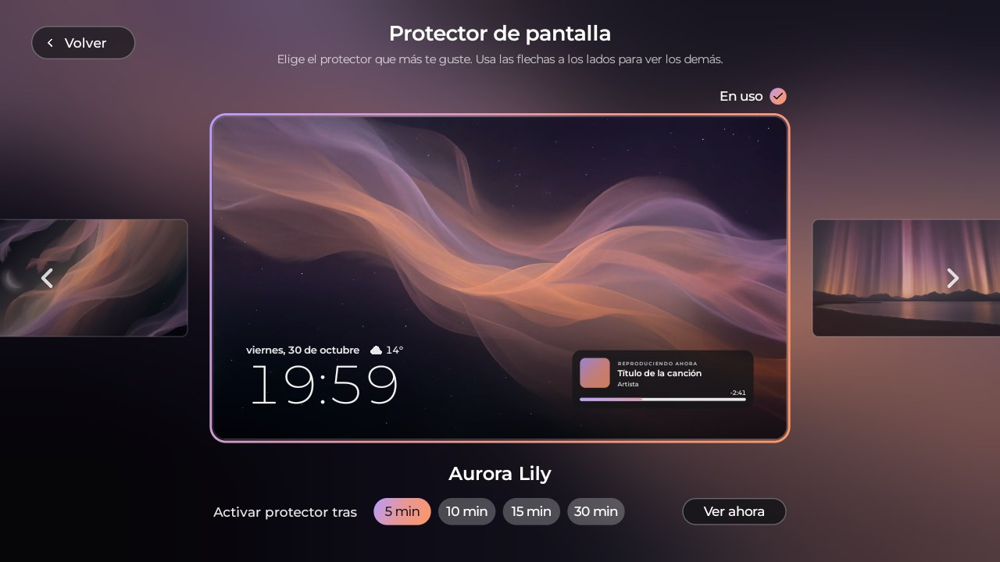
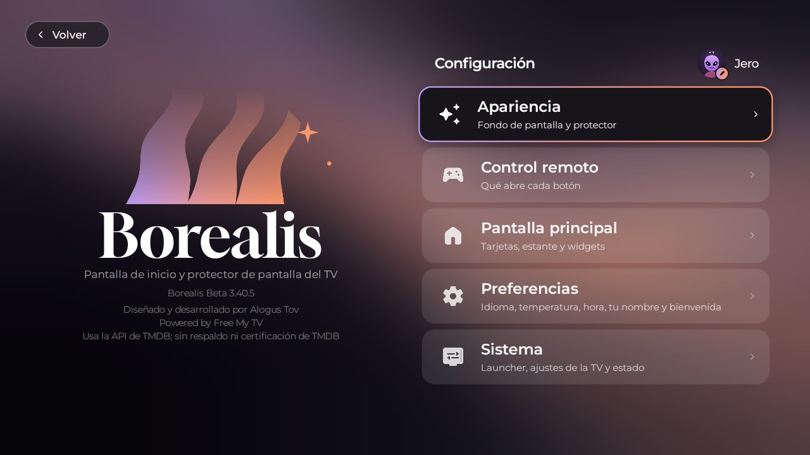
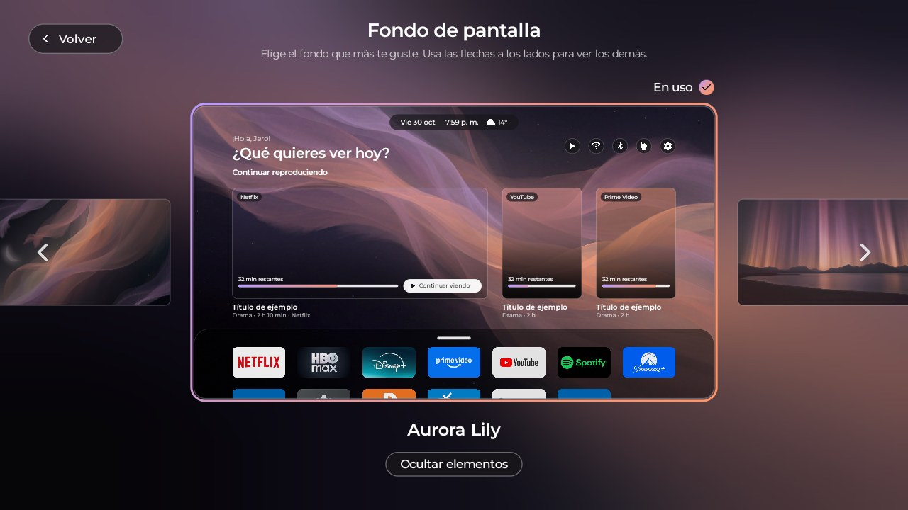
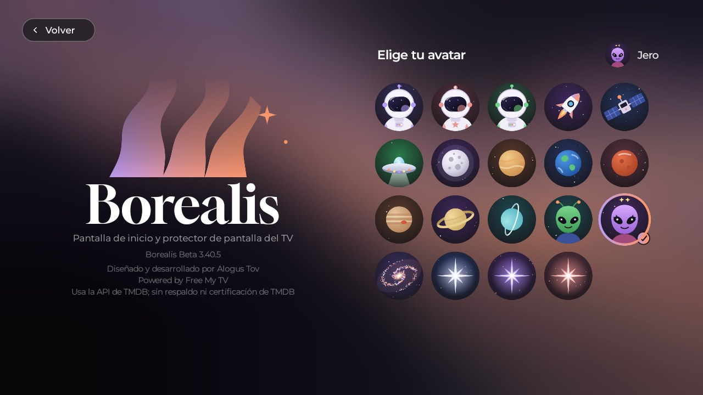
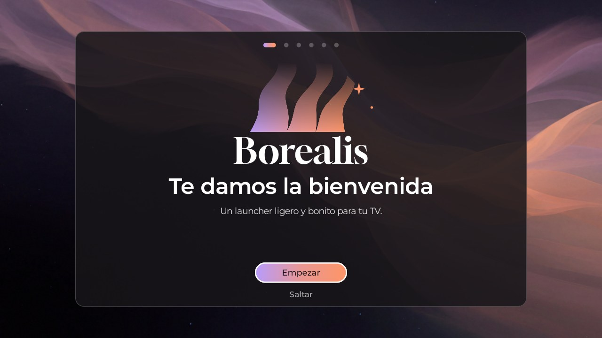
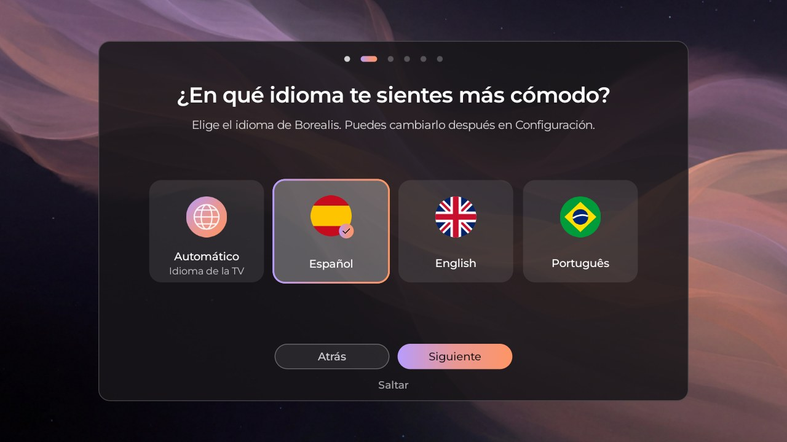
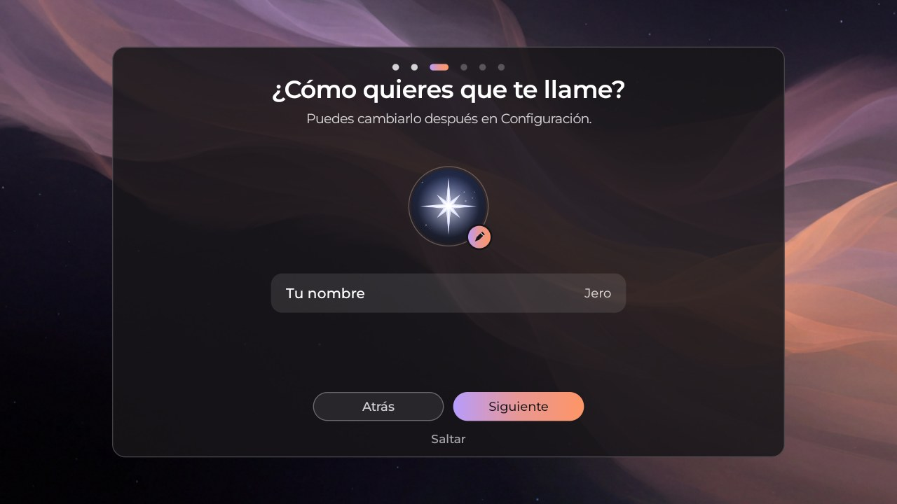
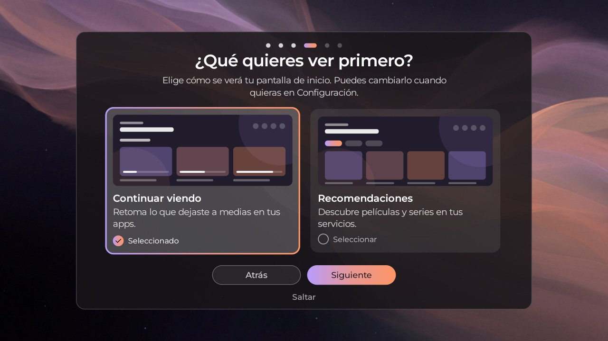
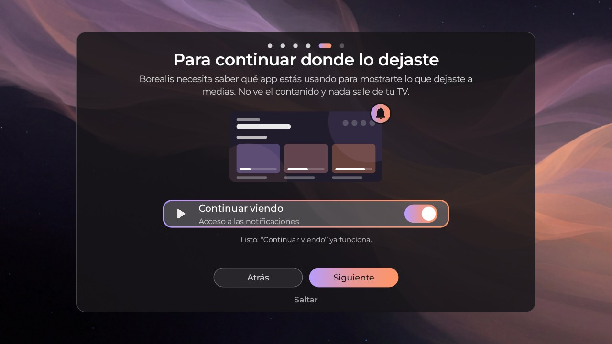
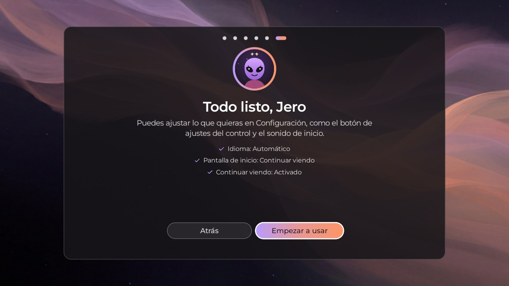

Tu TV, bajo
una nueva luz.
Una pantalla de inicio y un protector de pantalla ligeros y bonitos para Google TV y Android TV. Tus apps, "Continuar viendo" y fondos que se sienten tuyos.

Hecho para que tu TV se vea y se sienta bien
Sin librerías pesadas, sin cuentas y sin ruido. Solo lo que necesitas, bien cuidado.
Continuar viendo
Retoma lo que dejaste a medias en tus apps, o descubre películas y series con TMDB.
Ligero
Se dibuja directo, sin librerías pesadas: rápido incluso en TVs modestas.
Hazlo tuyo
Fondos, protectores de pantalla, un estante que organizas y un avatar para cada persona de la casa.
Gratis y privado
Sin cuentas, sin anuncios y sin rastreo. Se sostiene con donaciones voluntarias.
Se actualiza con un OK
Te avisa cuando hay una versión nueva y se instala sin computador.
En tu idioma
Español, English y Português, o el idioma de tu TV.
Así se ve
Capturas reales, tomadas desde una TV.



La primera vez
Una bienvenida de un minuto configura tu idioma, tu nombre, tu pantalla de inicio y "Continuar viendo". Puedes repetirla cuando quieras.






Instalar
Unos 10 minutos, una sola vez. Después se actualiza solo con un OK.
- Instala Downloader (de AFTVnews, gratis) desde la tienda de tu TV.
- Permítele instalar apps: Ajustes → Apps → Seguridad y restricciones → Fuentes desconocidas → Downloader activado.
- Abre Downloader, escribe el código 3357424 → Ir → Instalar.
- Activa el modo desarrollador y la Depuración USB en tu TV, y abre Borealis. Sigue la bienvenida: al final se activa como tu pantalla de inicio.
Si Borealis no logra activarse como inicio en tu TV, puedes instalarlo una vez desde un computador. La guía completa está en GitHub. Guía completa de instalación
¿Quieres volver? En Borealis → Ajustes elige Original y regresa el inicio de tu TV.
Preguntas frecuentes
¿Es seguro?
Borealis no pide cuentas, no muestra anuncios y no te rastrea. Solo se conecta a internet para el clima, para las recomendaciones de TMDB y para buscar actualizaciones en GitHub. El código es público.
¿En qué TVs funciona?
Está probado en una TV con Android TV 11. Es una beta: úsala con cuidado y cuéntanos qué encuentras. LG webOS y Samsung Tizen están planeadas.
¿Cuesta algo?
No. Es gratis de instalar y usar, y lo seguirá siendo. Si te gusta, puedes apoyar su desarrollo con una donación voluntaria; donar no desbloquea nada.
¿Puedo volver al inicio de mi TV?
Sí, cuando quieras: en los ajustes de Borealis elige Original.
Apoya el proyecto
Borealis es gratis de instalar y usar, y lo seguirá siendo. Si te gusta, puedes apoyar su desarrollo con una donación voluntaria. Donar no desbloquea nada: solo ayuda a que el trabajo continúe. ¡Gracias!
Apoyar en GitHub Sponsors